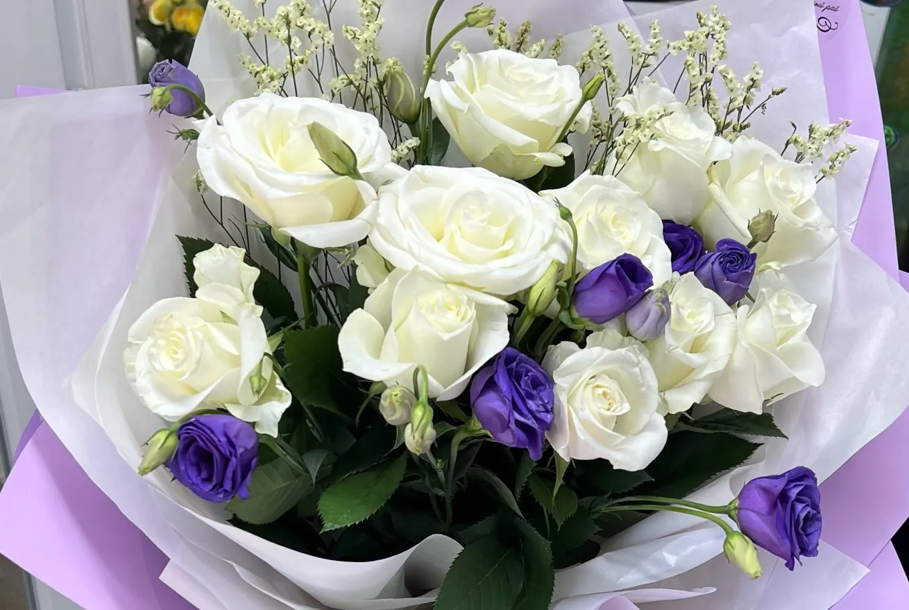

Отзывы
5,0 в 2ГИС, 19 оценокСамый лучший магазин! Обслуживание хорошее. Цветы шикарные!😍
Очень хороший цветочный магазин 🌷 Цветы свежие, букеты красивые, всё быстро и аккуратно. Обязательно вернусь ещё! ❤️
отличный сервис,все показывают,рассказывают,весь процесс держат в курсе и собирают шикарные букеты!!!😍😍😍
Все 8 отзывов
Заказывал букет с другого города
Договорились очень быстро и оперативно
Цветы просто супер свежие, пахнут, простоят не один день
Спасибо большое ❤️
отличное обслуживание, вежливый персонал и отличные цветы!!! самые лучшие во всём КБ🔥🔥
заказали с бишкека, не подвели и превзошли все ожидания.
upd: в 3 фотке цветы спустя 3 недели🔥🔥
Очень понравился магазин «Цветочный рай»! 🌸 Огромный выбор красивых и свежих цветов, композиции оформлены с большим вкусом и любовью. Персонал очень вежливый и внимательный, всегда помогут подобрать идеальный букет. 💐
Очень большой выбор цветов и подарков 🌸 Есть красивые игрушки и разные дополнения к букетам 🧸 Всё понравилось, обязательно придём ещё! ❤️
Уютный магазин, вежливое обслуживание, свежие цветы. Большой ассортимент, красивая оформление только цветок ничего более. Доставка всегда во время. Большой ассортимент сумочек, корзиночек, коробочек, открытки и игрушки обычные и ручной работы , шарики. Мне очень понравилось там всё есть , что нужно .
Закажите букет
Выберите букет, дату и текст открытки. Готовое сообщение уйдёт магазину в WhatsApp.
Оформить заказГвардейская улица, 7Б/1, Кара-Балта
Ежедневно 09:00–21:00